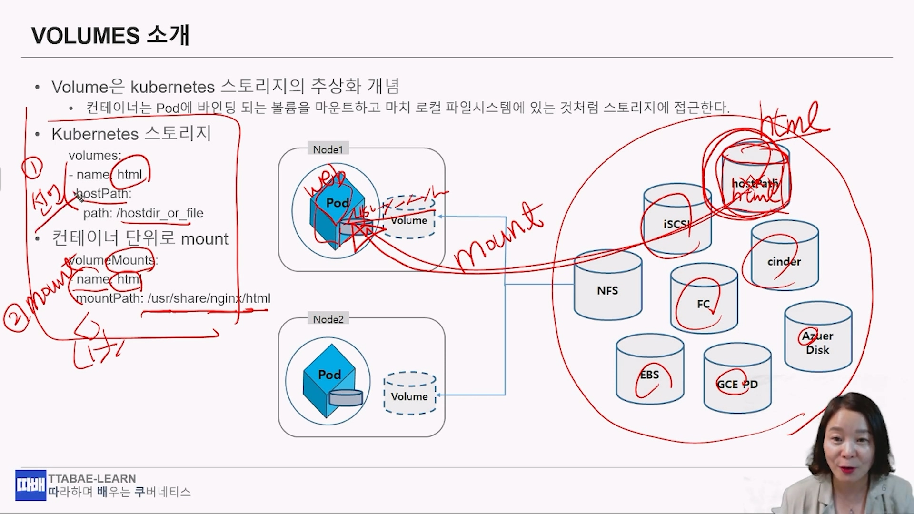

볼륨관리
💡
컨테이너의 내부 데이터는 일시적이므로 컨테이너가 실행 중 일때만 유효하며, 컨테이너가 종료될 때 삭제된다.
따라서 영구적으로 데이터를 보존하거나, 각 컨테이너간의 파일을 공유하기 위해서 볼륨 추상화 기법이 필요.
볼륨을 사용하려면 .spec.volumes에서 pod에 제공할 볼륨을 선언하고
선언된 볼륨을 .spec.containers[*].volumeMounts에서 마운트한다.
따라서 영구적으로 데이터를 보존하거나, 각 컨테이너간의 파일을 공유하기 위해서 볼륨 추상화 기법이 필요.
볼륨을 사용하려면 .spec.volumes에서 pod에 제공할 볼륨을 선언하고
선언된 볼륨을 .spec.containers[*].volumeMounts에서 마운트한다.
{kind=link}

출처 : 유튜브 따배런 따배쿠 https://www.youtube.com/@ttabae-learnemptyDir
emptyDir볼륨은 pod가 node에 할당될 때 처음 생성되며, 해당 node에서 pod가 실행되는 동안에만 존재한다.
이름에서 알 수 있듯이emptyDir볼륨은 처음에는 비어있다.
pod 내 모든 컨테이너는emptyDir볼륨에서 동일한 파일을 읽고 쓸 수 있지만, 해당 볼륨은 각각의 컨테이너에서 동일하거나 다른 경로에 마운트될 수 있다.
(sidecar 컨테이너 생성기법에서 이용하는 것처럼,emptyDir볼륨에 저장되고 있는 로그데이터를, sidecar컨테이너가 이를 로그로 표출할 수 있다)
어떤 이유로든 node에서 pod가 제거되면emptyDir의 데이터가 영구적으로 삭제된다.
#emptyDir
cat > empty.yaml
apiVersion: v1
kind: Pod
metadata:
name: web-empty
spec:
containers:
- image: nginx:1.14
name: nginx
volumeMounts:
- name: html
mountPath: /usr/share/nginx/html
volumes:
- name: html
emptyDir: {} # <-- 여기를 주목. 임시저장소가 pod안에 생기는 것이다.
kubectl apply -f empty.yaml
#실행하면 403 forbidden 에러가 뜬다.
curl <POD-IP>
#pod 안에 들어가서
kubectl exec pod -it -- /bin/bash
# ls /usr/share/nginx/html 해보면 아무것도 없다.hostpath
hostPath는 HOST OS의 디스크의 경로를 Pod 에 Mount 해서 사용하는 Volume 방식이다.Docker 에서 -v 옵션으로 Volume 을 연결하는 것과 동일한 개념.
cat hostpath.yaml
apiVersion: v1
kind: Pod
metadata:
name: web
spec:
volumes:
- name: html
hostPath:
path: /webdata
# type: DirectoryOrCreate #<-- 디폴트 DirectoryOrCreate. 그외에 Directory, FileOrCreate, File
containers:
- image: nginx:1.14
name: nginx
volumeMounts:
- name: html
mountPath: /usr/share/nginx/html
# 실행된 pod는 HOST OS에 있는 /webdata를 바라보게 된다.
kubectl apply -f hostpath.yamlNFS
Network File System 또한 볼륨으로 pod에 마운트 할 수 있다.NFS볼륨에 데이터를 미리 채울 수 있으며, pod 간에 데이터를 공유도 가능.NFS는 여러 작성자가 동시에 마운트할 수 있다
💡
# nfs volume 마운트
cat nfs.yaml
apiVersion: v1
kind: Pod
metadata:
name: web-nfs
spec:
containers:
- image: nginx:1.14
name: nginx
volumeMounts:
- name: html
mountPath: /usr/share/nginx/html
volumes:
- name: html
nfs:
server: 10.100.0.105
path: /sharedir/k8s
kubectl apply -f nfs.yaml
curl 10.36.0.1 # <-- nfs에 공유된 공간의 index.html이 노출된다.
kubectl delete pod web-nfsPV & PVC
스토리지 담당자가 본인이 관리하는 스토리지 환경에 따라
HostPath에서 1TB(RWO)따오고 AWS에서 500G(RWO)따오고, NFS에서 1TB(RWX)따오는 등등
PV1, PV2, PV3… 이라 이름짓고, 쿠버네티스에서 사용할 수 있게 관리한다.
이를 PersistentVolumes이라고 한다.어플리케이션 운영자는 1TB가 필요한데 RWO형태면 된다라고 요구사항을 낸다.
이를 PersistentVolumeClaims 라고 한다.
📎
RWO: ReadWriteOnce
RWX: ReadWriteMany
ROX: ReadOnlyMany
RWX: ReadWriteMany
ROX: ReadOnlyMany
PV
PersistentVolumes
#PV(PersistentVolumes) 생성
cat pv-hostpath.yaml
apiVersion: v1
kind: PersistentVolume
metadata:
name: pv-hostpath
spec:
capacity:
storage: 5Gi
volumeMode: Filesystem
accessModes:
- ReadWriteOnce
storageClassName: manual
persistentVolumeReclaimPolicy: Delete
hostPath:
path: /webdata
cat pv.yaml
apiVersion: v1
kind: PersistentVolume
metadata:
name: pv1
spec:
capacity:
storage: 10Gi
volumeMode: Filesystem
accessModes:
- ReadWriteMany
storageClassName: manual
persistentVolumeReclaimPolicy: Delete
nfs:
path: /sharedir/k8s
server: 10.100.0.105
kubectl apply -f pv.yaml
kubectl get pv
NAME CAPACITY ACCESS MODES RECLAIM POLICY STATUS CLAIM STORAGECLASS REASON AGE
pv-hostpath 5Gi RWO Delete Available manual 8s
pv1 10Gi RWX Delete Available manual 3sPVC
PersistentVolumeClaims
#PVC(PersistentVolumesClaim) 생성
cat pvc.yaml
apiVersion: v1
kind: PersistentVolumeClaim
metadata:
name: pvc-web
spec:
accessModes:
- ReadWriteMany
volumeMode: Filesystem
resources:
requests:
storage: 5Gi #<-- 5Gi를 요청했더라도, 남아있는 pv가 10Gi라면, 10Gi가 붙게된다.
storageClassName: manual #<-- pv만들때 manual 명칭으로 만든것을 pvc에서 사용할 수 있다.
kubectl apply -f pvc.yaml
kubectl get pvc
NAME STATUS VOLUME CAPACITY ACCESS MODES STORAGECLASS AGE
pvc-web Bound pv1 10Gi RWX manual 4s
# 만들어진 PVC를 pod에 적용
cat pvc-pod-web.yaml
apiVersion: v1
kind: Pod
metadata:
name: web
spec:
containers:
- image: nginx:1.14
name: nginx
volumeMounts:
- name: html
mountPath: /usr/share/nginx/html
volumes:
- name: html
persistentVolumeClaim:
claimName: pvc-web
kubectl apply -f pvc-pod-web.yaml
kubectl describe pod web